Waterfall Applicator — Operations Manual¶
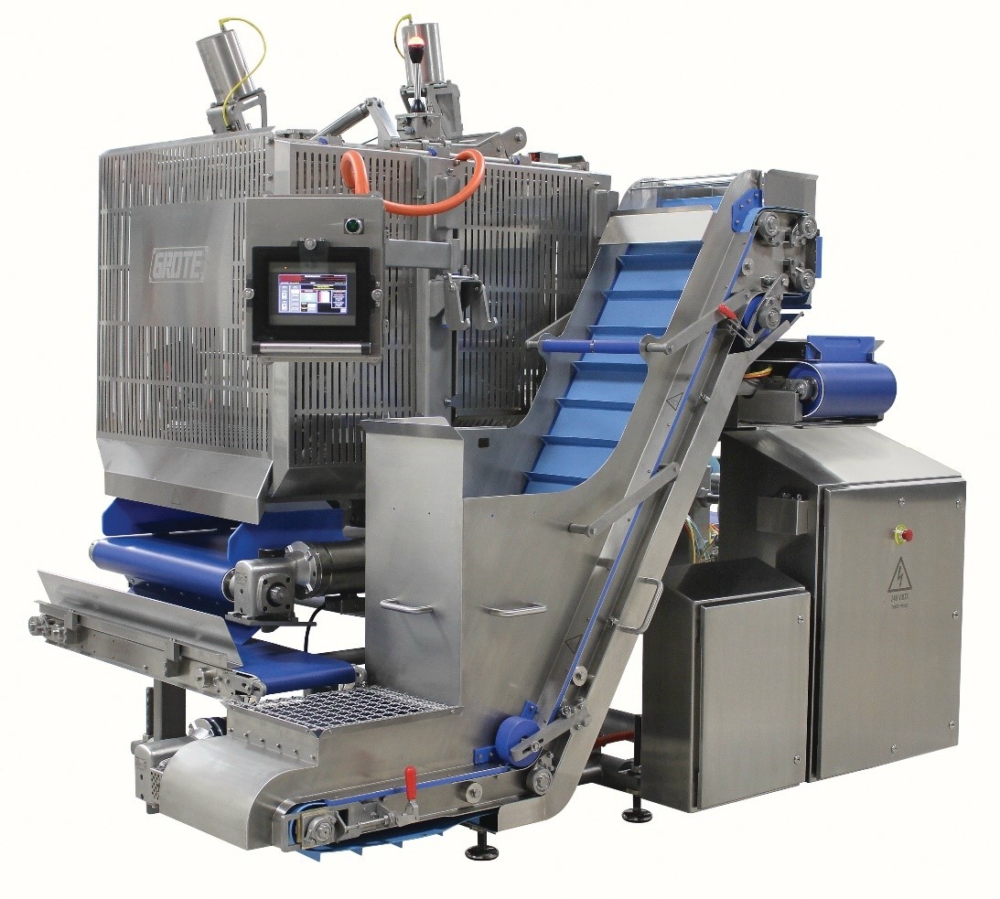
Version 1.0 / Date: 3/1/2026 / Model: WA-xx / Serial Number: _____
This manual covers startup, operation, calibration, and troubleshooting for the Grote Company Waterfall Applicator.
| Section | Content |
|---|---|
| 1 — Safety | Emergency stops, safety switches, safe state definition |
| 2 — Equipment Overview | Component identification, primary and upper assembly |
| 3 — Startup | Startup sequence |
| 4 — Operating Modes | LOCAL/REMOTE control, RUN, EMPTY, BYPASS, WASH, CONSERVE |
| 5 — Recipe Setup | RECIPE screen fields, loading/saving, RAKE height and compaction assessment |
| 6 — Process Control & Tuning | System checkpoints, automated fill, supply/demand balance, PID control |
| 7 — Motor Speed Scaling | Drive scaling configuration and reference table |
| 8 — Load Cell Calibration | RAKE and PORTION load cell calibration |
| 9 — Hopper Height Calibration | HOPPER HEIGHT SENSOR calibration |
| 10 — Rake/Flicker Height Calibration | Encoder-based height calibration sequence |
| 11 — OI Reference | Screen map, status banner, stacklight, MACHINE OPTIONS |
| 12 — Troubleshooting | Fault diagnosis by symptom |
| Appendix A — Recipe Starting Points | Production starting point tables by portion weight range |
| Appendix B — Glossary | Term definitions |
| About |
Grote Company 1160 Gahanna Pkwy / Columbus, OH 43230 North & South America: +1 614-868-8414 / International (UK): +44 (0) 1978-855662 customerservice@grotecompany.com
Manual
1 — Safety¶
1.1 Emergency Stop Devices¶
Two emergency stop devices are installed on the Applicator: one on the operator interface enclosure, and one on the PRODUCT CONVEYOR frame opposite the operator interface. A third device is on the OI swing arm when that option is installed.
When pressed, the device removes all motion from the Applicator. To reset, pull the actuator until it releases.

1.2 Non-Contact Safety Switches¶
Two safety switches monitor guard position on the Applicator: one on the RETURN #2 guard and one on the MAIN GUARD.
 ¶
¶
1.3 Safe State Definition¶
Activating an emergency stop device or opening a safety guard places the Applicator in a safe state. The following occur automatically:
- All motion commands are removed. Motors coast to stop.
- PID control loops are disabled.
- Pneumatic air supply to the PRODUCT CONVEYOR and PORTION CONVEYOR tension cylinders is removed. Cylinders retract, and belt tension is released.
- The MACHINE ENABLE circuit must be reset before operation can resume.
Belt Tension Loss
When PORTION CONVEYOR tension cylinders retract, the belt loses tension and may contact targets remaining on the PRODUCT CONVEYOR.
Note
Emergency stop devices are for emergency conditions only. For normal shutdown, use the STOP control on the HOME screen.
2 — Equipment Overview¶
2.1 Component Identification¶
The diagrams below identify all major components.
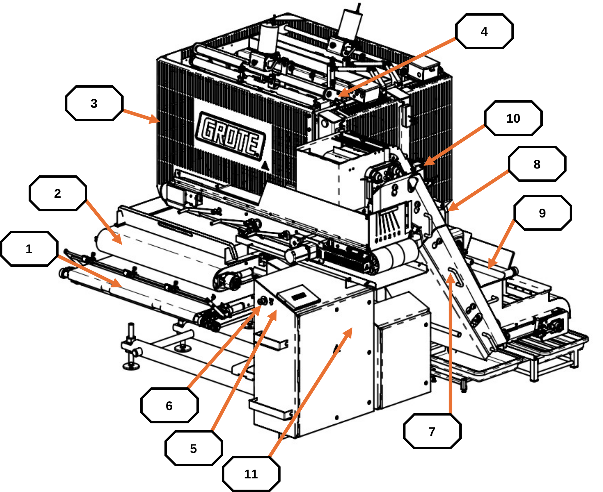
Primary components — callouts [1] – [16]
| # | Component |
|---|---|
| 1 | PRODUCT CONVEYOR |
| 2 | PORTION CONVEYOR |
| 3 | RETURN #3 CONVEYOR |
| 4 | MAIN GUARD |
| 5 | MAIN GUARD SWITCH |
| 6 | CONVEYOR EMERGENCY STOP |
| 7 | OPERATOR INTERFACE (OI) EMERGENCY STOP |
| 8 | MACHINE ENABLE PUSH BUTTON |
| 9 | AIR SUPPLY |
| 10 | RETURN #1 CONVEYOR |
| 11 | RETURN #2 CONVEYOR |
| 12 | HOPPER HEIGHT SENSOR |
| 13 | HOPPER |
| 14 | RETURN #2 GUARD SWITCH |
| 15 | OPERATOR INTERFACE (OI) |
| 16 | ELECTRICAL DISCONNECT |
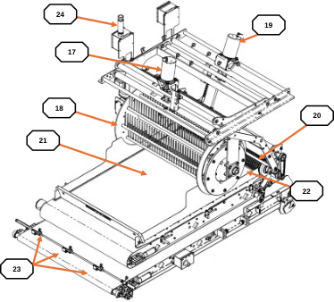
Upper assembly components — callouts [17] – [24]
| # | Component |
|---|---|
| 17 | RAKE HEIGHT MOTOR |
| 18 | RAKE MOTOR |
| 19 | FLICKER HEIGHT MOTOR |
| 20 | FLICKER MOTOR |
| 21 | RAKE LOAD CELLS |
| 22 | PORTION LOAD CELLS |
| 23 | TARGET PHOTOEYES |
| 24 | STACKLIGHT |
Note
Component descriptions are in Appendix B — Glossary.
3 — Startup¶
3.1 Startup Sequence¶
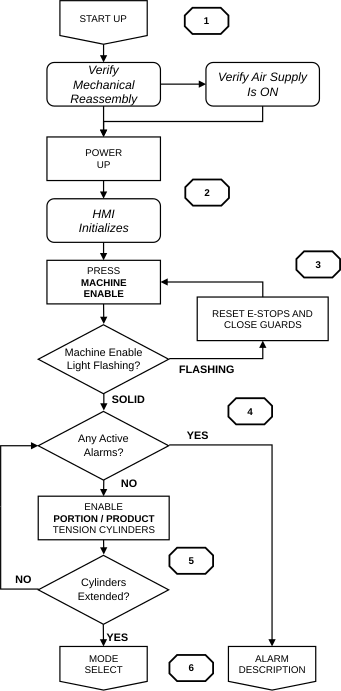
-
Confirm the Applicator is fully reassembled. Belts, guards, and scrapers are all in place.
-
Verify the compressed air supply is ON.
-
Turn the ELECTRICAL DISCONNECT to the ON position. Wait for the PLC and OI to finish initializing. The HOME screen appears when ready. If active alarms are present, the OI displays the ALARMS screen first. Navigate to ALARMS, correct all conditions, then press FAULT RESET.
Note
If the MACHINE ENABLE indicator flashes: reset all emergency stop devices, close all guards, then press MACHINE ENABLE again. If it continues to flash, navigate to MANUAL → SAFETY PLC to identify which device remains open. If alarm conditions remain, navigate to the ALARMS screen and press FAULT RESET after each condition is corrected.
-
Press the MACHINE ENABLE push button. Verify the MACHINE ENABLE indicator is illuminated solid.
-
Enable the PORTION CONVEYOR and PRODUCT CONVEYOR tension cylinders from the HOME screen. Confirm that both are fully extended before proceeding.
-
When all criteria are satisfied, proceed to Section 4 — Operating Modes.
4 — Operating Modes¶
Sections 4.3 through 4.6 describe the four operator-selected modes. PRIME and CONSERVE are automatic states. The Applicator enters PRIME and CONSERVE modes based on operating conditions.
4.1 Applicator Control — LOCAL and REMOTE¶
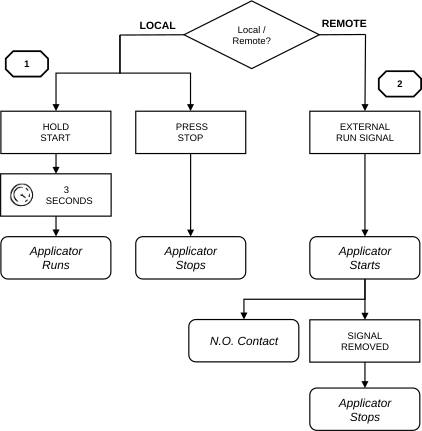
Figure 4.1 — LOCAL and REMOTE control flowchart
- LOCAL control: Start and stop the Applicator from the HOME screen using PRESS TO START and STOP. The Applicator runs independently of any upstream or downstream equipment.
- REMOTE control: An external line signal starts and stops the Applicator. A dry-contact output (Upstream Interlock) sends the Applicator's run status to upstream equipment.
4.2 Mode Selection¶
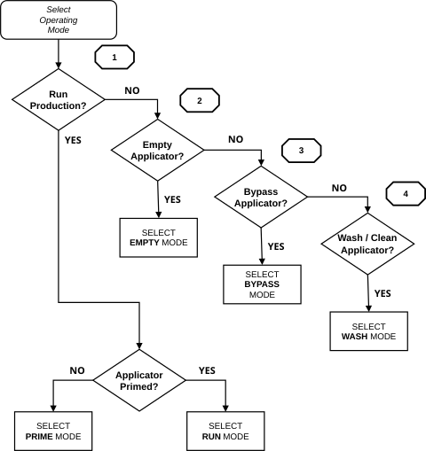
Figure 4.2 — Operating mode selection flowchart
- Run Production. Select RUN mode for normal topping application. The Applicator verifies priming criteria before starting. If not met, the OI prompts the operator to complete PRIME mode first.
- Empty Applicator. Select EMPTY mode to clear topping from the Applicator.
- Bypass Applicator (Pass-Thru). Select BYPASS mode to run the PRODUCT CONVEYOR without applying topping. This mode allows operation with the MAIN GUARD and/or RETURN #2 guard open.
- Wash / Clean Applicator. Select WASH mode for cleaning. The RAKE and FLICKER move to preset heights. All motors run at preset speeds.
4.3 PRIME / RUN Mode¶
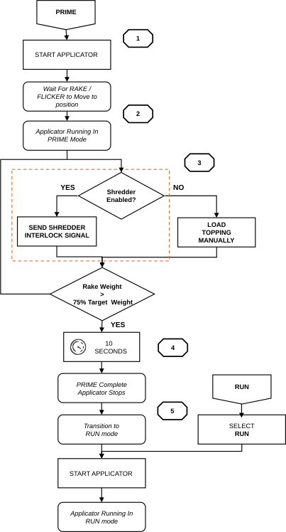
Figure 4.3 — PRIME and RUN mode flowchart
PRIME Mode¶
- Select PRIME mode. Press and hold PRESS TO START for three seconds.
- The RAKE and FLICKER move to recipe positions. Allow travel to complete before loading topping.
- If the SHREDDER option is enabled, topping feed starts automatically. Otherwise, load topping manually at the HOPPER.
- Priming continues until RAKE weight exceeds 75% of TARGET LEVEL for 10 continuous seconds.
- When complete, the Applicator transitions automatically to RUN mode.
Note
PRIME mode is available only in LOCAL control. Selecting RUN mode before priming is complete prompts the OI to require PRIME mode to finish first.
4.4 EMPTY Mode¶
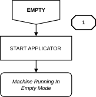
Figure 4.4 — EMPTY mode flowchart
- Select EMPTY mode. Press and hold PRESS TO START for three seconds.
Note
Depending on MOTOR SETUP configuration, RETURN #1 and/or RETURN #3 may run in reverse. EMPTY mode is available in LOCAL control only.
4.5 BYPASS Mode¶
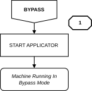
Figure 4.5 — BYPASS mode flowchart
- Select BYPASS mode. Start the Applicator. The PRODUCT CONVEYOR operates without topping application.
Note
RETURN #1 has a manual run function in BYPASS mode to clear accumulated topping. When enabled, the INFEED and OUTFEED CONVEYORS run with the PRODUCT CONVEYOR in BYPASS mode. BYPASS mode is available in LOCAL and REMOTE control.
4.6 WASH Mode¶
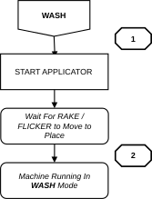
Figure 4.6 — WASH mode flowchart
- Select WASH mode. Press and hold PRESS TO START for three seconds.
- The RAKE and FLICKER travel to the upper position (~2.0–2.5 in). Confirm travel is complete before opening guards or removing belts.
Note
In WASH mode, all motors operate at preset speeds and preset heights. WASH mode is available only in LOCAL control.
4.7 CONSERVE Mode¶
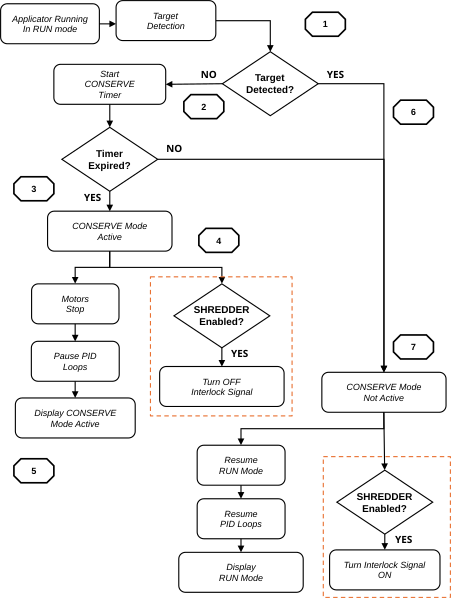
Figure 4.7 — CONSERVE mode flowchart
- During RUN mode, the Applicator monitors the TARGET PHOTOEYES.
- If no target is detected, the Conserve timer starts. A target arriving before the timer expires resets the timer, and operation continues normally.
- If the timer expires, the Applicator enters CONSERVE mode.
- All motors except the PRODUCT CONVEYOR, INFEED CONVEYOR, and OUTFEED CONVEYOR (if enabled) stop. PID loops pause. The SHREDDER interlock (if enabled) turns OFF.
- The OI displays MACHINE RUNNING CONSERVE MODE ACTIVE on the information banner.
- When a target is detected, CONSERVE mode clears automatically.
- Motors, including the INFEED and OUTFEED CONVEYORS, and PID loops return to normal RUN mode operation. The SHREDDER interlock (if enabled) turns back ON.
Note
Set the Conserve timer at MACHINE OPTIONS → CONSERVE MODE TIME [MS], in milliseconds. The value should be based on travel time from the TARGET PHOTOEYE to the drop point while running at the expected line speed. Do not obstruct or flag the TARGET PHOTOEYES to reset CONSERVE mode.
Topping Loading
Topping must not be added directly to the RAKE area when the Applicator is stopped. Load topping at the HOPPER only.
5 — Recipe Setup¶
5.1 RECIPE Screen — Field Reference¶

Figure 5.1 — RECIPE screen
All production parameters are stored in the RECIPE screen. Editable fields have a yellow background with green text. See Appendix A — Recipe Starting Points for starting point values.
| Field | Description |
|---|---|
| RAKE SPEED [20–100%] | RAKE motor speed. Controls how aggressively topping is metered onto the PORTION CONVEYOR. |
| RAKE HEIGHT [0.25–2.00 in] | Vertical position of the RAKE above the PORTION CONVEYOR surface. Determines bed depth. |
| HIGH LEVEL [30.0–50.0 lb] | RAKE weight upper threshold. Set 5–10 lb above TARGET LEVEL. Above this value, RETURN #2 slows. This is the upper PID boundary, not a target. |
| TARGET LEVEL [0.0–45.0 lb] | RAKE weight PID setpoint. Start at the table value in Appendix A. Reduce if topping supply cannot sustain the level. |
| LOW LEVEL [15.0–45.0 lb] | RAKE weight lower threshold. Set 5–10 lb below TARGET LEVEL. Reached when the product bed no longer touches the side guards after the RAKE. Below this value, RETURN #2 accelerates. |
| LO-LO LEVEL [5.0–20.0 lb] | RAKE weight low-low threshold. Set to approximately 50–60% of TARGET LEVEL. Triggers PRIME mode prompt. Do not set too close to TARGET LEVEL. |
| FLICKER SPEED [0–100%] | Speed of the FLICKER motor. |
| FLICKER HEIGHT [0.20–2.00 in] | Vertical position of the FLICKER relative to the nose roller. |
| HOPPER TARGET [0.0–6.0 in] | Target topping height in the HOPPER area. Start at 4 inches. Increase if RETURN #2 flights appear under-filled. Decrease if topping overflows the HOPPER. |
| PRODUCT [5–120 FPM] | PRODUCT CONVEYOR speed. |
| PORTION [0.50–24.1 FPM] | PORTION CONVEYOR speed. Ensure the RAKE PID is balanced before enabling PORTION CONTROL. Use the starting point value as an initial position only. |
| PCM FEED [0–62 FPM] | PCM FEED CONVEYOR speed (if equipped). |
| INFEED CONV [5–120 FPM] | INFEED CONVEYOR speed (if equipped). |
| OUTFEED CONV [5–120 FPM] | OUTFEED CONVEYOR speed (if equipped). |
| WEIGHT [0.01–16.0 oz] | Target portion weight. |
| DIAMETER / LENGTH [1.0–18.0 in] | Target dimensions used for portion weight calculations. |
Note
RAKE HEIGHT and PORTION CONVEYOR speed values cannot be changed while PORTION CONTROL is active.
5.2 Loading and Saving Recipes¶
- Navigate to the RECIPE screen.
- To load: enter the recipe number in RECIPE # [SAVE/LOAD]. Press and hold LOAD RECIPE for three seconds.
- To create a new recipe: enter a recipe number and name. Enter all parameters. Press and hold SAVE RECIPE for three seconds.
Note
The Applicator stores up to 128 recipes. Verify all parameters against the production specification before starting. See Appendix A for starting point values from production data. Saving to an existing recipe number overwrites it without confirmation. Verify the recipe number before saving.
5.3 RAKE Height Setup and Topping Compaction Assessment¶
RAKE height controls topping bed depth on the PORTION CONVEYOR. The bed must be uniform with no voids across the full width. Any gap causes portion weight variation.
Topping Compaction Assessment Procedure¶
Before setting RAKE height, assess the topping's compaction:
- Collect a representative sample sufficient to fill one hand.
- Apply light pressure and open your hand. Poke the sample. If it separates freely, the topping is loose.
- Squeeze moderately and open your hand. Poke the pile. Does it fall apart or hold its shape?
- Squeeze firmly and open your hand. Does the pile retain its shape after poking?
- Repeat steps 1 through 4 on two additional fresh samples to confirm the result is consistent across the lot.
- Adjust RAKE height on the RECIPE screen in 0.10 in increments. Set the recipe and let prime complete fully. Allow approximately 100 targets to pass through before evaluating the bed. Recycled material must stabilize before the bed reflects the true recipe settings.
- When the bed is uniform with no voids, save the recipe.
Note
High compaction (topping holds shape after light or moderate pressure): indicates high moisture or stickiness. Reduce TARGET LEVEL first. A lighter pile reduces compaction pressure on the conveyor. Then set RAKE HEIGHT to the point where the bed rakes out cleanly with no voids.
Low compaction (topping crumbles under firm pressure): start with the baseline TARGET LEVEL and RAKE HEIGHT from the recipe. Typical RAKE TARGET LEVEL ranges:
- Shredded cheese (standard): 32–45 lb
- IQF / frozen product: 25–35 lb
- Mixed or vegetable toppings with varied piece sizes: similar to cheese range with RAKE SPEED reduced.
Long or sticky shred may need a slightly higher TARGET LEVEL to allow the RAKE to push through and form a consistent bed. Adjust RAKE HEIGHT until the bed is clean, then reduce TARGET LEVEL until compaction improves. Fine or short shreds behave more freely and typically tolerate a lighter pile.
Note
Judging compaction by feeling develops with experience. A training video demonstrating this procedure is planned. A reference will be added here when available.
Note
Repeat the assessment when the topping lot changes, after extended idle periods, or when ambient conditions differ significantly from normal.
6 — Process Control & Tuning¶
6.1 Three Critical System Checkpoints¶
When a weight or consistency problem occurs, work through these checkpoints in order before adjusting any parameters. Most problems originate at Checkpoint 1 or 2.
| Checkpoint | Criteria for Correct Operation |
|---|---|
| 1 — HOPPER fill | RETURN #2 flights must be uniformly filled at all times. Each flight holds approximately 1.8 to 2.2 lb of topping. Overfilled flights pack and meter irregularly. Underfilled flights cause the PID to over-accelerate before material reaches the RAKE load cells. |
| 2 — RAKE weight | RAKE LOAD CELL weight must stay stable at TARGET LEVEL. Weight instability at the RAKE is the most common cause of variation in portions. |
| 3 — FLICKER dispersion | The FLICKER must distribute topping evenly across the full target width. Uneven dispersion produces left-to-right weight variation that RAKE weight and PORTION CONVEYOR speed cannot correct. |
6.2 Automated Fill Control (PCM / SHREDDER Option)¶

Figure 6.1 — Automated fill control flowchart
Fill Start Criteria¶
Both conditions must be met simultaneously:
- HOPPER level is below the HOPPER TARGET value from the active recipe.
- RAKE LOAD CELL weight is below the HIGH-LEVEL threshold.
Fill Stop Criteria¶
Any one of the following stops the fill cycle:
- RAKE LOAD CELL weight reaches or exceeds the HIGH-LEVEL limit.
- HOPPER level exceeds the overshoot-adjusted value (HOPPER TARGET + HOPPER OVERSHOOT HEIGHT) for 2.5 continuous seconds.
- HOPPER level reaches the Stop-Fill threshold for 2 continuous seconds.
Transport Delay
The RETURN #2 conveyor has an inherent transport delay between the HOPPER and the RAKE load cells. The shredder or PCM feed rate must match the Applicator's topping consumption rate. HOPPER OVERSHOOT HEIGHT and HOPPER customer limits are set at MAINT → HOPPER.
6.3 Supply and Demand Balance¶
Every variable-speed drive on the Applicator meters material. RETURN #2 is no different. At any given speed, each flight carries approximately 1.8 to 2.2 lb of topping and deposits it into the recirculation system once per revolution. The rate at which material enters the system is set by belt speed and cannot change faster than the PID responds.
The production line has a fixed demand: topping leaving the Applicator on finished targets. RETURN #2 must supply that amount continuously. Too little and the RAKE starves. Too much and the HOPPER overflows.
The example below uses a three-lane line running 33 targets per lane per minute at 16 oz per target: a demand of 99 lb/min. The supply RETURN #2 delivers depends on two factors: how full each flight is, and how fast the belt runs. Both must be correct simultaneously.
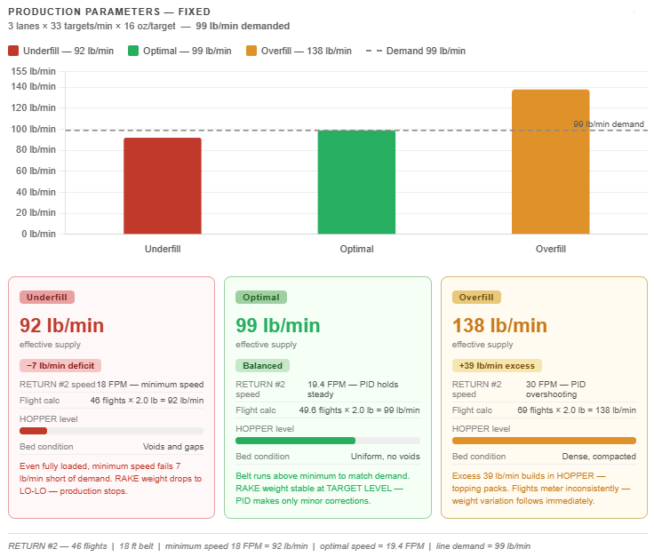
Figure 6.3 — RETURN #2 supply rate vs. line demand: Underfill, Optimal, and Overfill conditions. Line: 3 lanes × 33 targets/min × 16 oz = 99 lb/min demanded.
Underfill¶
Underfill occurs when RETURN #2 cannot deliver enough material to meet demand. Two conditions cause it, and either one stops the system from keeping up.
The first is partially loaded flights. If the HOPPER runs low due to a shredder fault, a PCM gap, or a manual feed interruption, flights arrive partially filled. At half capacity (1 lb per flight), RETURN #2 delivers only 46 lb/min at minimum belt speed: 53 lb/min below demand. The PID drives the belt faster to compensate, but partially empty flights mean effective supply continues to fall regardless of belt speed. At 30 FPM with half-loaded flights, supply reaches only 76.7 lb/min, still 22 lb/min short.
The second is the minimum belt speed with fully loaded flights. Even with every flight carrying a full 2 lb load, RETURN #2 at its minimum speed of 18 FPM delivers only 46 flights per minute: 92 lb/min. That is 7 lb/min below the 99 lb/min demand. The minimum speed of RETURN #2 is not a ceiling to avoid. It is a floor that must be exceeded whenever production demand requires it.
In both cases, the RAKE weight drops progressively. When it falls below the LO-LO LEVEL, the Applicator prompts PRIME mode and production stops.
Optimal¶
RETURN #2 runs at the speed that matches fully loaded flights to demand. At 19.4 FPM, approximately 49.6 flights complete per minute at 2 lb each, delivering 99 lb/min. The PID holds this speed, making small corrections as RAKE weight drifts. The HOPPER stays at its target level, flights fill consistently, and the topping bed is uniform across the full conveyor width.
Overfill¶
Occurs when the PID commands RETURN #2 faster than the line can consume. At 30 FPM with fully loaded flights, the belt delivers 76.7 flights per minute at 2 lb each: 153 lb/min into a system consuming 99. A 54 lb/min surplus accumulates in the HOPPER. Topping packs under its own weight and flights begin metering inconsistently. Weight variation follows immediately.
This is why HOPPER TARGET should be kept at or below 6 inches. Above that level, the accumulated weight of topping in the HOPPER compresses the material. What appears to be a full HOPPER is actually a packed mass that does not meter correctly, regardless of what the PID commands.
Note
When setting up a new recipe or a new topping type, confirm that RETURN #2 can run fast enough to meet the line's consumption rate with fully loaded flights. If the belt is running at or near maximum speed and RAKE weight is still falling, the topping supply source — shredder or PCM — is the constraint, not the PID. Contact Grote Service to evaluate the drive speed range for that application.
6.4 RETURN #2 PID Control (Rake Weight)¶

Figure 6.4 — RETURN #2 PID control block diagram
| Parameter | Value and Function |
|---|---|
| Process Variable (PV) | Two-second rolling average of RAKE LOAD CELL weight. |
| Setpoint (SP) | TARGET LEVEL from the active recipe. |
| Proportional Gain (P) | 0.75: Immediate correction proportional to weight error. |
| Integral Gain (I) | 1.75 / min: Eliminates long-term steady-state deviation. |
| Derivative Gain (D) | 0.003 min: Dampens sudden weight fluctuations. |
| Output | RETURN #2 conveyor speed command, constrained by recipe HIGH LEVEL and LOW LEVEL limits. |
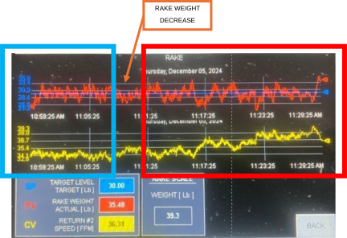
Figure 6.4A — RAKE screen trend: TARGET LEVEL (blue), RAKE WEIGHT AVERAGE (red), RETURN #2 SPEED (yellow)
- The green rectangle shows stable production: RAKE weight holds close to TARGET LEVEL, and RETURN #2 speed runs at a steady, low value. The PID is making only minor corrections.
- The arrow marks the first sign of trouble: RETURN #2 speed begins to climb. At this moment, the RAKE weight may still appear stable, but the PID has already detected a deficit and is commanding the belt to run faster to compensate. A rising RETURN #2 speed trend is an early warning that supply is falling behind demand. If the HOPPER is not replenished, RAKE weight will follow the speed upward and then drop sharply as the HOPPER empties.
- The red rectangle shows what follows: RAKE weight becomes erratic as the PID overcorrects against a starved HOPPER and RETURN #2 speed swings in response. This is the visual signature of a supply problem, not a PID tuning problem.
6.5 PORTION CONVEYOR PID Control (Portion Weight)¶

Figure 6.5 — Combined portion and rake control overview
Manual Setup and Weight Verification¶
- The Applicator must be in RUN mode with priming complete.
- Run targets through the Applicator. Weigh each after topping application.
- Run approximately 100 targets and verify that weights are stable and consistent before proceeding.
- Use the speed increment/decrement controls on the PORTION screen to adjust PORTION CONVEYOR speed until the applied weight matches the recipe target weight.
- Press and hold TARE SCALE for three seconds. Perform the tare with the PORTION CONVEYOR running and carrying a representative topping load. The current weight and speed are saved as the baseline, and the load cell zeroes out, removing conveyor tare from the measurement.
Enabling PID Portion Control¶
- After the tare is complete and the target weight is verified, press TOGGLE PORTION CONTROL on the PORTION screen.
- The PID loop activates and adjusts PORTION CONVEYOR speed automatically.
Note
If the Applicator enters PRIME mode while PORTION CONTROL is active, PORTION CONTROL is disabled automatically. Re-enable it after priming is complete and the RAKE weight has stabilized at TARGET LEVEL. Do not enable PORTION CONTROL until target weights are stable and consistent. Starting the PID on an unstable baseline causes oscillation. When PORTION CONTROL is turned OFF, or the Applicator exits RUN mode, automatic adjustment stops, and PORTION CONVEYOR returns to the recipe baseline speed.
| Parameter | Value and Function |
|---|---|
| Proportional Gain (P) | 0.5: Immediate correction proportional to weight error. |
| Integral Gain (I) | 25 / min: Corrects persistent weight offset over time. |
| Derivative Gain (D) | 0.0: Not used for this process. |
| Output | PORTION CONVEYOR speed command, constrained by recipe min/max limits. |
7 — Motor Speed Scaling¶
7.1 Overview¶
Motor speed scaling sets the relationship between drive output (Hz) and the OI speed display (FPM). Each drive is scaled independently from MAINT → MOTOR SETUP → [drive name].
Each drive service screen has two sections. MOTOR SCALING sets the frequency range and the corresponding belt speed. CUSTOMER ENTRY LIMITS defines the speed range operators can enter on the RECIPE screen.
Note
Verify motor scaling during initial commissioning and after any drive or motor replacement. Use MANUAL FUNCTIONS on each drive service screen to run the drive at a set frequency for speed measurement.
7.2 Scaling Configuration Procedure¶
- Stop the Applicator and log in with GROTE credentials.
- Navigate to MAINT → MOTOR SETUP → [drive name].
- Set MOTOR SCALING MAX [Hz] to the rated maximum frequency listed on the VFD parameter sheet (Parameter P044).
- Set MOTOR SCALING MIN [Hz] to the rated minimum frequency listed on the VFD parameter sheet (Parameter P043).
- Using MANUAL FUNCTIONS, run the drive at MAX [Hz]. Measure the physical belt surface speed with a calibrated tachometer. Enter the measured value in MOTOR SCALING MAX [FPM].
- If Parameter P043 equals 0, enter 0 in MOTOR SCALING MIN [FPM]. If Parameter P043 is non-zero, run the drive at MIN [Hz], measure the physical belt surface speed with a calibrated tachometer, and enter the measured value in MOTOR SCALING MIN [FPM].
- Set CUSTOMER ENTRY LIMITS MIN and MAX [FPM] within the physical range defined by MOTOR SCALING.
- Repeat for all drives.
7.3 Drive Scaling Reference¶
Values in brackets [ ] are placeholders. Replace with values from the Applicator-specific electrical drawings and motor nameplates for this unit.
| Drive / Component | Scale Min [Hz] | Scale Max [Hz] | Scale Min [FPM] | Scale Max [FPM] | Cust. Limits [FPM] |
|---|---|---|---|---|---|
| PRODUCT CONVEYOR | 0.00 | 90.00 | 0.00 | 100.00 | 5.0 – 120.0 |
| PORTION CONVEYOR | [xx.xx] | [xx.xx] | [xx.xx] | [xx.xx] | [x.x – xxx.x] |
| RETURN #2 | [xx.xx] | [xx.xx] | [xx.xx] | [xx.xx] | [x.x – xxx.x] |
| RAKE | [xx.xx] | [xx.xx] | [xx.xx] | [xx.xx] | [x.x – xxx.x] |
| RAKE HEIGHT | [xx.xx] | [xx.xx] | [xx.xx] | [xx.xx] | N/A |
| FLICKER | [xx.xx] | [xx.xx] | [xx.xx] | [xx.xx] | [x.x – xxx.x] |
| FLICKER HEIGHT | [xx.xx] | [xx.xx] | [xx.xx] | [xx.xx] | N/A |
| RETURN #1 | [xx.xx] | [xx.xx] | [xx.xx] | [xx.xx] | [x.x – xxx.x] |
| RETURN #3 | [xx.xx] | [xx.xx] | [xx.xx] | [xx.xx] | [x.x – xxx.x] |
| TRANSFER CONV (if equipped) | [xx.xx] | [xx.xx] | [xx.xx] | [xx.xx] | [x.x – xxx.x] |
| PCM CONVEYOR (if equipped) | [xx.xx] | [xx.xx] | [xx.xx] | [xx.xx] | [x.x – xxx.x] |
| PCM RAKE (if equipped) | [xx.xx] | [xx.xx] | [xx.xx] | [xx.xx] | [x.x – xxx.x] |
| PCM RAKE HEIGHT (if equipped) | [xx.xx] | [xx.xx] | [xx.xx] | [xx.xx] | N/A |
8 — Load Cell Calibration¶
8.1 Overview¶
Load cell calibration maps the load cell signal (Volts) to the weight display on the OI (lb). The RAKE LOAD CELLS (two, wired in parallel) and PORTION LOAD CELLS are each calibrated as a single input from MAINT → CALIBRATION → [load cell name].
The calibration screen shows the raw input and scaled output values. Enter reference values in the MIN and MAX fields, then press and hold TEACH MIN or TEACH MAX for three seconds.
Note
Verify calibration at initial commissioning and after replacing any load cell component. Calibrate only with the conveyor empty and the load cell area clean.
8.2 Calibration Procedure¶
-
At the load cell amplifier, located inside the DC enclosure, use the coarse and fine adjustment screws to zero the raw signal. The conveyor must be empty and clean. Empty means the conveyor surface is free of all topping material, not just the visible pile.
-
Enter 0.0 in the SCALE MIN value input field.
-
Press and hold TEACH MIN for three seconds.
-
Place calibration weights on the scale following the load cell manufacturer's instructions.
Note
Recommended calibration weight values to be confirmed. Use weights appropriate for the expected operating range of each load cell (RAKE or PORTION).
-
Enter the calibration weight value in the SCALE MAX value input field.
-
Press and hold TEACH MAX for three seconds.
-
Confirm the SCALED OUTPUT VALUE matches the calibration weight. If not, repeat Step 1.
9 — Hopper Height Calibration¶
9.1 Overview¶
Hopper height calibration maps the sensor output (Volts) to the height display on the OI (in). Calibrate from MAINT → CALIBRATION → HOPPER HEIGHT.
The calibration screen shows the raw sensor signal and the scaled output. Enter reference values in the MIN and MAX fields, then press and hold TEACH MIN or TEACH MAX for three seconds.
Note
Verify at initial commissioning and after sensor or cable replacement.
9.2 Calibration Procedure¶
Note
Calibration flag and calibration weights to be defined and documented. Description of the calibration flag geometry and recommended calibration weight values to be added here before publication.
- Place the calibration flag at the sensor to fully block the laser beam.
- Enter 0.0 in the SCALE MIN value input field.
- Press and hold TEACH MIN for three seconds.
- Move the calibration flag to the maximum measurable height position and record the physical height in inches.
- Enter the measured height value in the SCALE MAX value input field.
- Press and hold TEACH MAX for three seconds.
- Verify the SCALED OUTPUT VALUE matches the physical height reference. Repeat the procedure if the values do not match.
10 — Rake/Flicker Height Calibration¶
10.1 Overview¶
Calibration Sequence
Calibrate FLICKER HEIGHT before RAKE HEIGHT. The FLICKER must be in the upper position before the RAKE is moved up. Failure to follow this sequence can result in a collision between the two assemblies.
Rake and flicker height calibration maps the encoder position to the height display on the OI (in). RAKE HEIGHT and FLICKER HEIGHT are each calibrated from MAINT → CALIBRATION → [RAKE HEIGHT] or [FLICKER HEIGHT].
The calibration screen shows the raw sensor signal and the scaled output. Enter reference values in the MIN and MAX fields, then press and hold TEACH MIN or TEACH MAX for three seconds.
Note
Verify at initial commissioning and after replacing any encoder or height assembly component.
10.2 Calibration Procedure¶
Calibrate FLICKER HEIGHT first using the steps below. Then repeat the procedure for RAKE HEIGHT.
- Press JOG UP until the hard upper limit is reached.
- Press and hold the encoder RESET POSITION button for three seconds.
- Press JOG DOWN to move the FLICKER or RAKE to 2.0 inches.
- Press and hold TEACH MAX for three seconds.
- Press JOG DOWN to move the FLICKER or RAKE to 0.25 inches.
- Press and hold TEACH MIN for three seconds.
- Confirm the SCALED OUTPUT VALUE matches the physical position. If not, repeat Step 1.
Manual Jogging
The Applicator handles the FLICKER-before-RAKE sequence automatically in normal operation. Manual jogging bypasses this protection. Always raise FLICKER before RAKE when jogging manually.
11 — OI Reference¶
11.1 OI Screen Map¶
| Screen | Navigation Path | Function |
|---|---|---|
| HOME | Navigation bar → HOME | Applicator start/stop, mode selection (PRIME, RUN, EMPTY, BYPASS, WASH), MACHINE MODE (LOCAL/REMOTE), tension cylinder control, SHREDDER manual output, active recipe display, and Applicator Status Banner. |
| RECIPE | Navigation bar → RECIPE | Create, save, and load production recipes. Configure RAKE, FLICKER, HOPPER, conveyor speeds, target type, and dimensions. Yellow/green fields are editable. |
| PORTION | Navigation bar → PORTION | Monitor applied portion weight (SP, PV, CV). TOGGLE PORTION CONTROL. TARE SCALE. Manual PORTION CONVEYOR speed adjustment. Real-time weight trend. |
| RAKE | Navigation bar → RAKE | Real-time trend: RAKE WEIGHT AVERAGE (red), TARGET LEVEL (blue), RETURN #2 SPEED (yellow). SP, PV, CV for RETURN #2 PID. RAKE SCALE raw reading. |
| HOPPER | Navigation bar → HOPPER | ACTUAL LEVEL [in] vs. TARGET LEVEL [in] via bar graph and real-time trend. |
| MANUAL | Navigation bar → MANUAL | Access to all individual drive service screens and diagnostic screens. |
| MANUAL → [Drive] SERVICE | MANUAL → select drive button | Per-drive: MOTOR SCALING (MIN/MAX Hz, MIN/MAX FPM), CUSTOMER ENTRY LIMITS, VFD/VSS status, current [A], frequency [Hz], live speed [FPM], last fault code, RUN FORWARD, JOG FORWARD, MANUAL FUNCTIONS. |
| MANUAL → SAFETY PLC | MANUAL → SAFETY PLC | Real-time status of all safety circuit devices: OI E-STOP, REM OI E-STOP, MAIN CONV E-STOP, PCM CONV E-STOP, MAIN GS, RETURN #2 GS. Use this screen to identify which device is preventing MACHINE ENABLE. |
| MANUAL → INPUTS/OUTPUTS | MANUAL → INPUTS/OUTPUTS | Real-time diagnostic display of all digital inputs (MACHINE ENABLE, DOWNSTREAM, LN1/LN2/LN3, guard switches, E-stops, limit switches) and outputs (UPSTREAM, solenoids, SHREDDER INTERLOCK, stack lights). |
| ALARMS | Navigation bar → ALARM ACTIVE | Timestamped list of all active and historical alarm conditions. FAULT RESET clears latched faults. ALARM ACTIVE tab flashes red when any alarm is present. |
| MAINT | Navigation bar → MAINT (GROTE login required) | Access to MOTOR SETUP, CALIBRATION, POTENTIOMETER OVERRIDE, RUN OPTIONS, MACHINE OPTIONS, LOGIN/LOGOUT, SHUTDOWN. |
| MAINT → MOTOR SETUP → [Drive] | MAINT → MOTOR SETUP → drive button | Per-drive scaling: MOTOR SCALING MIN/MAX [Hz] and MIN/MAX [FPM], CUSTOMER ENTRY LIMITS MIN/MAX [FPM], and MANUAL FUNCTIONS for drive testing without running a production mode. |
| MAINT → CALIBRATION | MAINT → CALIBRATION | Load cell and sensor calibration. Tabs: RAKE LOAD CELL, PORTION LOAD CELL, HOPPER HEIGHT, FLICKER HEIGHT, RAKE HEIGHT. TEACH MIN and TEACH MAX buttons. Hold 3 seconds to teach. |
| MAINT → HOPPER | MAINT → HOPPER | HOPPER OVERSHOOT HEIGHT and HOPPER customer limits. |
| MAINT → MACHINE OPTIONS | MAINT → MACHINE OPTIONS | Toggle panel for all optional equipment and configuration settings. See Section 11.5. |
| MAINT → POTENTIOMETER OVERRIDE | MAINT → POTENTIOMETER OVERRIDE | Screenshots and description to be added. |
| MAINT → RUN OPTIONS | MAINT → RUN OPTIONS | Screenshots and description to be added. |
11.2 Applicator Status Banner¶
| Banner Message | Color | Condition |
|---|---|---|
| MACHINE FAULTED GO TO ALARMS SCREEN |
RED | Active fault. Navigate to ALARMS screen and press FAULT RESET after correcting each condition. |
| MAJOR FAULT EXISTS MACHINE STOPPED CHECK ALARMS |
RED | Critical fault. Applicator stopped. Navigate to ALARMS screen. |
| LOCAL MODE ONLY FUNCTION PUT MACHINE IN LOCAL MODE |
RED | A LOCAL-only function was attempted in REMOTE mode. Switch to LOCAL at the HOME screen. |
| OI ENCLOSURE E-STOP PRESSED | RED | Emergency stop active at OI enclosure. Rotate actuator clockwise to release. Press MACHINE ENABLE. |
| PRODUCT CONVEYOR E-STOP PRESSED | RED | Emergency stop active at PRODUCT CONVEYOR. Rotate actuator clockwise to release. Press MACHINE ENABLE. |
| INFEED CONVEYOR E-STOP PRESSED (WHEN EQUIPPED) | RED | Emergency stop active at INFEED CONVEYOR. Rotate actuator clockwise to release. Press MACHINE ENABLE. |
| OUTFEED CONVEYOR E-STOP PRESSED | RED | Emergency stop active at OUTFEED CONVEYOR. Rotate actuator clockwise to release. Press MACHINE ENABLE. |
| REMOTE OI ENCLOSURE E-STOP PRESSED (WHEN EQUIPPED) | RED | Emergency stop active at remote OI. Rotate actuator clockwise to release. Press MACHINE ENABLE. |
| MAIN GUARD OPEN | RED | MAIN GUARD is open. Close guard fully and press MACHINE ENABLE. |
| RETURN #2 GUARD OPEN | RED | RETURN #2 guard is open. Close guard fully and press MACHINE ENABLE. |
| CONTROL POWER REQUIRES RESET HOLD AND RELEASE MACHINE ENABLE BUTTON |
YELLOW | Control power requires reset. Hold and release the MACHINE ENABLE button. |
| CONTROL POWER RESET IN PROGRESS — PLEASE WAIT — |
YELLOW | Control power reset sequence in progress. Wait for completion. |
| MOVING RAKE AND FLICKER INTO POSITION — PLEASE WAIT — |
YELLOW | RAKE and FLICKER are traveling to recipe positions. Wait for travel to complete. |
| ENABLE PRODUCT BELT TENSION | YELLOW | PRODUCT CONVEYOR tension cylinder is not extended. Enable from the HOME screen. |
| ENABLE PORTION CONVEYOR TENSION | YELLOW | PORTION CONVEYOR tension cylinder is not extended. Enable from the HOME screen. |
| MACHINE REQUIRES PRIME BEFORE RUN MODE ALLOWED |
YELLOW | Priming criteria not met. Select PRIME mode and complete the priming sequence before selecting RUN. |
| MACHINE STARTED IN REMOTE MODE WAITING FOR DOWNSTREAM INTERLOCK |
YELLOW | Applicator started in REMOTE mode. Waiting for downstream interlock signal. |
| REMOTE RUN MODE STOPPED FROM OI - HOLD START TO RESTART - |
YELLOW | Applicator stopped from the OI while in REMOTE mode. Hold PRESS TO START to restart. |
| REMOTE RUN MODE STOPPED FROM LINE CONTROLLER OI - HOLD START TO RESTART - |
YELLOW | Applicator stopped by the line controller while in REMOTE mode. Hold PRESS TO START to restart. |
| ---- PRIME COMPLETED ---- REMOTE RUN MODE READY HOLD START |
YELLOW | Priming complete. Applicator in REMOTE mode and ready to start. Hold PRESS TO START. |
| MACHINE RUNNING CONSERVE MODE ACTIVE |
YELLOW | No target detected within the Conserve timer period. All motors except PRODUCT CONVEYOR stopped. Clears automatically when a target is detected. |
| MACHINE RUNNING | GREEN | Applicator running in RUN mode. Topping application active. |
| MACHINE RUNNING IN PRIME MODE | GREEN | PRIME mode sequence executing. |
| MACHINE RUNNING IN EMPTY MODE | GREEN | Applicator in EMPTY mode. |
| MACHINE RUNNING IN LOCAL BYPASS MODE | GREEN | PRODUCT CONVEYOR running without topping application. LOCAL control. |
| MACHINE RUNNING IN REMOTE BYPASS MODE | GREEN | PRODUCT CONVEYOR running without topping application. REMOTE control. |
| MACHINE RUNNING IN WASH MODE | GREEN | Applicator in WASH mode at preset speeds and heights. |
| ---- PRIME COMPLETED ---- LOCAL RUN MODE READY HOLD START |
GREEN | Priming complete. Applicator in LOCAL mode and ready to start. Hold PRESS TO START. |
| PRIME MODE READY HOLD START | GREEN | PRIME mode selected and ready. Hold PRESS TO START for three seconds. |
| EMPTY MODE READY HOLD START | GREEN | EMPTY mode selected and ready. Hold PRESS TO START for three seconds. |
| BYPASS MODE READY HOLD START | GREEN | BYPASS mode selected and ready. Start the Applicator. |
| WASH MODE READY HOLD START | GREEN | WASH mode selected and ready. Hold PRESS TO START for three seconds. |
Note
Two banner messages currently display "HMI" as they appear on the OI screen. These will be updated to read "OI" in a future PLC revision.
11.4 Stacklight Reference¶
| Indicator | State | Meaning |
|---|---|---|
| HORN | Pulsing | Applicator starting |
| RED | Blinking | Not enabled |
| RED | Solid | Faulted |
| YELLOW | Blinking | Low level |
| YELLOW | Solid | Level empty |
| GREEN | Blinking | Ready |
| GREEN | Solid | Running |
11.5 MACHINE OPTIONS Reference¶
| Option | Function | Default |
|---|---|---|
| IMPERIAL / METRIC | Sets unit system for all weight and dimension displays throughout the OI. | IMPERIAL |
| RAKE HEIGHT ADJ / NO RAKE HEIGHT ADJ | Enables or disables the RAKE HEIGHT MOTOR and associated controls. | RAKE HEIGHT ADJ |
| FLICKER HEIGHT ADJ / NO FLICKER HEIGHT ADJ | Enables or disables the FLICKER HEIGHT MOTOR and associated controls. | FLICKER HEIGHT ADJ |
| HOPPER SENSOR / NO HOPPER SENSOR | Enables or disables the HOPPER HEIGHT SENSOR input. | HOPPER SENSOR |
| PORTION SCALES / NO PORTION SCALES | Enables or disables the PORTION LOAD CELL inputs and PORTION PID loop. | PORTION SCALES |
| RAKE SCALES / NO RAKE SCALES | Enables or disables the RAKE LOAD CELL inputs and RETURN #2 PID loop. | RAKE SCALES |
| SHREDDER CONTROL / NO SHREDDER | Enables or disables the SHREDDER interlock output and automated fill sequence. | NO SHREDDER |
| PCM CONV / NO PCM CONV | Enables or disables the PCM conveyor option and automated fill sequence. | NO PCM CONV |
| AUX 1 CONV / NO AUX 1 CONV | Enables or disables the AUX 1 auxiliary conveyor. | NO AUX 1 CONV |
| AUX 2 CONV / NO AUX 2 CONV | Enables or disables the AUX 2 auxiliary conveyor. | NO AUX 2 CONV |
| SPEED FOLLOW / NO SPEED FOLLOW | Enables or disables external speed follow (line synchronization) input. | NO SPEED FOLLOW |
| CONSERVE MODE TIME [MS] | Conserve timer duration in milliseconds. Set based on target travel time from photoeye to drop point at operating line speed. | 30000 |
| ALLOWED # OF RECIPES | Maximum number of stored recipes. Up to 128. | 40 |
12 — Troubleshooting¶
12.1 Quick Reference Index¶
Locate the symptom below and go directly to the indicated subsection.
Note
Before consulting individual entries, evaluate the three critical checkpoints in order (Section 6.1): HOPPER fill → RAKE weight → FLICKER dispersion. Most weight and consistency problems originate at Checkpoint 1 or 2.
Operator: No tools, electrical work, or restricted screen access required. Can be performed during normal production.
Technician: Requires MAINT screen access, drive diagnostics, or mechanical work under LOTO.
| Symptom | Go to |
|---|---|
| Applicator will not start or enable | 12.2 — Safety Circuit & Startup Faults |
| Applicator will not start in RUN mode / repeatedly enters PRIME mode | 12.2 — Safety Circuit & Startup Faults |
| Portion weight inconsistent or out of specification | 12.3 — Weight & Application Quality Faults |
| Topping compacts under the RAKE | 12.3 — Weight & Application Quality Faults |
| Topping avalanche at the drop point | 12.3 — Weight & Application Quality Faults |
| RETURN #2 running at maximum speed continuously | 12.3 — Weight & Application Quality Faults |
| CONSERVE mode activating continuously or unexpectedly | 12.3 — Weight & Application Quality Faults |
| RAKE or FLICKER will not move to commanded position | 12.4 — Motion & Drive Faults |
| VFD or VSS fault on any drive | 12.4 — Motion & Drive Faults |
| RAKE LOAD CELL reads non-zero with empty, clean belt | 12.5 — Sensor & Calibration Faults |
| HOPPER HEIGHT SENSOR reading incorrect or erratic | 12.5 — Sensor & Calibration Faults |
| Communications fault (Safety PLC, OI, Remote IO) | 12.5 — Sensor & Calibration Faults |
| Active alarm on the ALARMS screen | 12.6 — Alarm Conditions Reference |
12.2 Safety Circuit & Startup Faults¶
| Symptom | Possible Cause | Corrective Action | Level |
|---|---|---|---|
| Applicator will not start | Emergency stop active | Reset all emergency stops. Verify SAFETY PLC screen shows all devices OK. Press MACHINE ENABLE. | Operator |
| Guard switch open | Close MAIN GUARD and RETURN #2 guard. Verify green status on SAFETY PLC screen. Press MACHINE ENABLE. | Operator | |
| Damaged guard switch or wiring fault | The switch is fail-safe — a damaged switch or broken wire produces the same result as an open guard. Inspect switch mounting, wiring connections, and cable integrity. Replace the switch if no mechanical cause is found. | Technician | |
| Tension cylinders not extended | Enable PRODUCT CONVEYOR and PORTION CONVEYOR tension cylinders from the HOME screen. Confirm both are fully extended before starting. | Operator | |
| Active alarm not cleared | Navigate to the ALARMS screen. Correct all active conditions. Press FAULT RESET. Then press MACHINE ENABLE. | Operator | |
| Air pressure fault active | Verify compressed air supply is on and at the required pressure. Inspect the supply line for leaks. | Operator | |
| Applicator will not start in RUN mode | Priming criteria not satisfied | Select PRIME mode and complete the priming sequence. | Operator |
| Applicator repeatedly enters PRIME mode | Topping supply interruption (shredder fault, PCM fault, or manual feed gap) | Verify that the shredder or PCM is operating at a rate that matches Applicator consumption. Monitor the RAKE screen trend. If RAKE weight drops to LO-LO LEVEL, the Applicator will prompt for PRIME mode. | Operator |
12.3 Weight & Application Quality Faults¶
| Symptom | Possible Cause | Corrective Action | Level |
|---|---|---|---|
| Portion weight inconsistent | HOPPER flights not consistently filled — Checkpoint 1 | Navigate to the HOPPER screen. Verify ACTUAL LEVEL matches TARGET LEVEL. If the level fluctuates, inspect the HOPPER HEIGHT SENSOR lens for contamination. Verify that the topping supply rate matches the Applicator's consumption. | Operator |
| RAKE weight not stable — Checkpoint 2 | Navigate to the RAKE screen. Observe the real-time trend. If RAKE weight oscillates, address HOPPER fill first. Check whether the RETURN #2 minimum speed is flooring the PID output. | Operator | |
| FLICKER not dispersing uniformly — Checkpoint 3 | Observe the topping waterfall visually. Verify FLICKER HEIGHT and FLICKER SPEED settings. Inspect the FLICKER blade for topping buildup. | Operator | |
| Topping bed has voids after the RAKE | Perform compaction assessment (Section 5.3). Adjust RAKE height and/or TARGET LEVEL in the recipe. Verify the bed is uniform with no gaps across the full belt width. | Operator | |
| PORTION PID enabled before stable baseline | Disable PORTION CONTROL. Manually stabilize target weights. Re-tare the PORTION CONVEYOR scale. Re-enable PORTION CONTROL. | Operator | |
| Load cell zero offset | Stop the Applicator. Remove all topping from the PORTION CONVEYOR. Navigate to MAINT → CALIBRATION → PORTION LOAD CELL. Verify raw input value at zero load. Investigate the mechanical cause before re-teaching. | Technician | |
| Topping compacts under the RAKE | RAKE height too low for topping stickiness level | Perform compaction assessment (Section 5.3). Increase RAKE height in 0.10 in increments until the bed shows no compaction. Save the recipe. | Operator |
| RAKE TARGET LEVEL set too high | Reduce TARGET LEVEL in the active recipe. A lower pile in front of the RAKE reduces compaction pressure on the bed. | Operator | |
| Topping avalanche at the drop point | PORTION CONVEYOR speed too slow | Increase PORTION CONVEYOR speed. PORTION CONVEYOR should run as fast as possible while maintaining the target bed weight to prevent topping from avalanching at the nose roller. | Operator |
| FLICKER height too low | Increase FLICKER height slightly. The FLICKER must not press into the topping bed. | Operator | |
| RETURN #2 at maximum speed continuously | HOPPER flights not full — topping supply insufficient | Verify the topping supply rate matches or exceeds Applicator consumption. Inspect the HOPPER HEIGHT SENSOR lens for contamination. | Operator |
| TARGET LEVEL set above achievable supply rate | Reduce TARGET LEVEL to a value achievable with the available supply rate. | Operator | |
| RETURN #2 minimum speed floor prevents PID from balancing | Navigate to MAINT → MOTOR SETUP → RETURN #2. Reduce RAKE TARGET LEVEL or reduce the topping supply rate to match the Applicator's minimum operating speed. | Technician | |
| CONSERVE mode activates continuously | Conserve timer shorter than normal target gap at current line speed | Increase CONSERVE MODE TIME [MS] in MACHINE OPTIONS. The timer must exceed the normal gap between consecutive targets at the TARGET PHOTOEYE. | Technician |
| TARGET PHOTOEYE dirty or misaligned | Clean the photoeye lens on the affected lane(s). Verify alignment. Check the ALARMS screen for a PHOTOEYE STUCK ON warning. | Operator |
12.4 Motion & Drive Faults¶
| Symptom | Possible Cause | Corrective Action | Level |
|---|---|---|---|
| RAKE or FLICKER will not move to commanded position | Height motor disconnect open | Verify the RAKE HEIGHT or FLICKER HEIGHT MOTOR DISCONNECT is in the ON position. Check the ALARMS screen for a disconnect open fault. | Operator |
| Encoder fault active | Navigate to the ALARMS screen. Check for encoder faults. Inspect encoder mounting gap and alignment. See Section 12.5 for encoder fault procedures. | Technician | |
| Mechanical obstruction in height travel | Stop the Applicator. Engage LOTO. Inspect the RAKE or FLICKER height mechanism for physical obstruction. Clear the obstruction before restoring power. | Technician | |
| RAKE or FLICKER overtravel limit | RAKE HIGH/LOW LIMIT or FLICKER HIGH/LOW LIMIT fault active | Navigate to MANUAL → [RAKE HEIGHT or FLICKER HEIGHT]. Command motion away from the limit. Verify limit switch indicators on the INPUTS/OUTPUTS screen. | Operator |
| VFD fault — any drive | Fault code active | Navigate to MANUAL → [drive] SERVICE. Press ? to view the fault code description and recommended corrective actions. | Technician |
| VSS fault — RETURN #1, RETURN #3 | VSS fault code active | Navigate to MANUAL → [drive] SERVICE. Read the VSS fault code. Press the ? button for guidance. Correct the condition, then press FAULT RESET. | Technician |
| Motor disconnect fault — any drive | Motor branch circuit disconnect open or tripped | Locate the motor branch circuit disconnect for the named drive. Verify the condition that caused the trip. Reset or close the disconnect. Press FAULT RESET on the ALARMS screen. Motor disconnects are optional, customer-specified equipment. They are not configurable from the OI. | Technician |
12.5 Sensor & Calibration Faults¶
| Symptom | Possible Cause | Corrective Action | Level |
|---|---|---|---|
| RAKE LOAD CELL reads non-zero with empty, clean belt | Topping residue under load cell or mounting frame | Stop the Applicator. Clean all topping material from under the RAKE assembly and load cell mounting areas. Navigate to MAINT → CALIBRATION → RAKE LOAD CELL. Verify raw input value at zero load. | Technician |
| Damaged load cell mounting frame | Inspect the PORTION CONVEYOR frame for damage. Load cells are mounted on the PORTION CONVEYOR frame. Do not re-teach zero to mask physical damage. | Technician | |
| HOPPER HEIGHT SENSOR reading incorrect or erratic | Lens contamination | Stop the Applicator. Clean the sensor lens with a clean, lint-free cloth. Restart and observe the HOPPER screen until a stable reading is displayed. | Operator |
| Sensor mounting shifted or angle changed | Verify sensor mounting angle and position have not shifted. Recalibrate via MAINT → CALIBRATION → HOPPER HEIGHT if mounting is confirmed correct. | Technician | |
| RAKE/FLICKER HEIGHT Encoder warning — RESONANCE COUPLING WEAK | Encoder magnetic coupling below warning threshold | Inspect the encoder mounting gap. Clean the encoder face. Do not operate indefinitely with this warning active — loss of coupling will result in a FAULT. | Technician |
| RAKE/FLICKER HEIGHT Encoder fault — NO RESONANCE COUPLING | Complete loss of encoder magnetic coupling | Inspect encoder mounting and verify gap specification. Check for physical damage. Replace the encoder if coupling cannot be restored. | Technician |
| RAKE/FLICKER HEIGHT Encoder fault — MULTITURN FAULT | Encoder multiturn count error | Power cycle the Applicator. If the fault persists, the encoder requires replacement or re-calibrating. | Technician |
| SAFETY PLC COMMS LOST FAULT | Communication between main PLC and Safety PLC lost | Inspect network connections between controllers. Power cycle the Applicator. If fault persists with connections intact, contact Grote Service Department. | Technician |
| WATERFALL JB or PCM JB REMOTE IO COMMS LOST FAULT | EtherNet/IP communication to junction box lost | Inspect the EtherNet/IP cable connection to the junction box. Verify power to the junction box. Power cycle if connections are intact. | Technician |
| OI COMMS LOST FAULT | OI network communication lost | Verify OI network cable connection. Power cycle the OI. If fault persists, contact Grote Service Department. | Technician |
12.6 Alarm Conditions Reference¶
When an alarm is active, the ALARM ACTIVE tab flashes red. Go to the ALARMS screen to see the message and timestamp. Press FAULT RESET after correcting each condition.
| Alarm Message (OI) | Category | Required Action |
|---|---|---|
| OI ENCLOSURE E-STOP PRESSED | Emergency Stop | Pull the OI enclosure actuator to release. Press MACHINE ENABLE. Verify all safety devices show OK on the SAFETY PLC screen. |
| MAIN CONVEYOR E-STOP PRESSED | Emergency Stop | Pull the PRODUCT CONVEYOR actuator to release. Press MACHINE ENABLE. |
| PCM CONVEYOR E-STOP PRESSED | Emergency Stop | Pull the PCM conveyor actuator to release. Press MACHINE ENABLE. |
| OI SWING ARM E-STOP PRESSED | Emergency Stop | Pull the OI swing arm actuator to release. Press MACHINE ENABLE. |
| APPLICATOR NOT ENABLED | Enable Circuit | Reset all emergency stops. Close all guards. Press MACHINE ENABLE. Navigate to MANUAL → SAFETY PLC to identify any remaining open safety devices. |
| MAIN GUARD SAFETY SWITCH OPEN | Safety Switch | Close the MAIN GUARD completely. Verify the actuator is aligned with the switch. Press MACHINE ENABLE. |
| RETURN #2 SAFETY SWITCH OPEN | Safety Switch | Close the RETURN #2 guard completely. Verify alignment. Press MACHINE ENABLE. |
| PCM GUARD SAFETY SWITCH OPEN | Safety Switch | Close the PCM guard completely. Verify the actuator is aligned with the switch. Press MACHINE ENABLE. |
| MAIN AIR PRESSURE FAULT | Warning | Verify the compressed air supply is on and at the required pressure. Inspect the supply line for leaks. This alarm is configurable from MACHINE OPTIONS in the OI. |
| WARNING – INVALID RECIPE PARAMETER | Warning | A recipe value exceeds configured user limits. Navigate to the RECIPE screen and verify all fields are within configured limits. See Section 11.5 for user limit configuration. |
| WARNING – LN1 / LN2 / LN3 PHOTOEYE STUCK ON | Warning | Check the photoeye lens for obstructions and clean if needed. Inspect the mounting bracket — if it was struck or has loosened, the photoeye may have shifted out of position. These photoeyes are not adjustable and have no calibration procedure. If the photoeye fails, the signal goes OFF, not ON. |
| [DRIVE NAME] VFD FAULT | Drive Fault | See Section 12.4 for diagnostic procedure. |
| [DRIVE NAME] VSS FAULT | Drive Fault | See Section 12.4 for diagnostic procedure. |
| RAKE FAILED TO RAISE / LOWER FAULT | Motion Fault | See Section 12.4 for diagnostic procedure. |
| FLICKER FAILED TO RAISE / LOWER FAULT | Motion Fault | See Section 12.4 for diagnostic procedure. |
| RAKE / FLICKER HIGH or LOW LIMIT FAULT | Motion Fault | See Section 12.4 for diagnostic procedure. |
| RAKE / FLICKER HEIGHT ENCODER – RESONANCE COUPLING WEAK | Encoder Warning | See Section 12.5 for diagnostic procedure. |
| RAKE / FLICKER HEIGHT ENCODER – NO RESONANCE COUPLING FAULT | Encoder Fault | See Section 12.5 for diagnostic procedure. |
| RAKE / FLICKER HEIGHT ENCODER – MULTITURN FAULT | Encoder Fault | See Section 12.5 for diagnostic procedure. |
| SAFETY PLC COMMS LOST FAULT | Communications | Power cycle the Applicator. If the fault persists with connections intact, contact Grote Service Department. |
| WATERFALL JB REMOTE IO COMMS LOST FAULT | Communications | Inspect the EtherNet/IP connection to the Waterfall junction box. Verify power to the junction box. This alarm applies to custom OEM configurations. It is not configurable from the OI. |
| PCM JB REMOTE IO COMMS LOST FAULT | Communications | Inspect the EtherNet/IP connection to the PCM junction box. This alarm applies to custom OEM configurations. It is not configurable from the OI. |
| OI COMMS LOST FAULT (ARM / PEDESTAL) | Communications | Inspect the OI Ethernet network cable. Verify the OI is powered on. Power cycle the OI. If the fault persists, contact Grote Service Department. |
| CARD READER COMMS LOST FAULT | Communications | Verify the card reader connection. Power cycle if connections are intact. The card reader is a custom option, not configurable from the OI. |
| [MOTOR NAME] DISCONNECT OPEN | Disconnect | See Section 12.4 for diagnostic procedure. Motor disconnects are optional, customer-specified equipment. |
Appendices
Appendix B — Glossary¶
| Term | Definition |
|---|---|
| Air supply | Customer-provided compressed air connection for pneumatic components on the Applicator. |
| Applicator | The complete Waterfall Applicator machine — all conveyors, the RAKE and FLICKER assemblies, the HOPPER, and associated controls. |
| CONSERVE mode | An automatic state that activates in RUN mode when no targets are detected within the timer period. All motors except the PRODUCT CONVEYOR, INFEED CONVEYOR, and OUTFEED CONVEYOR stop and PID loops pause. Clears automatically when a target is detected. |
| Conveyor emergency stop | Emergency stop device on the PRODUCT CONVEYOR frame. Pull the actuator to release. |
| Electrical disconnect | Main power isolation device for the Applicator. Cuts electrical power to the control panel and all associated components when switched OFF. |
| Flicker | Distributes topping at the PORTION CONVEYOR drop point — the WATERFALL point — creating a consistent application. Not designed to break up clumps. |
| Flicker height motor | Adjusts the vertical position of the FLICKER above the PORTION CONVEYOR nose roller. |
| Flicker motor | Drives the FLICKER assembly. |
| FPM (Feet Per Minute) | The engineering unit used to express conveyor belt surface speed throughout the OI and this manual. |
| Hopper | The bin area at the base of the RETURN #2 conveyor where topping accumulates before the flights carry it into the recirculation system. |
| Hopper height sensor | Laser sensor that monitors topping height in the HOPPER area. |
| Infeed conveyor | Optional upstream conveyor. When enabled, runs continuously with the PRODUCT CONVEYOR in RUN, BYPASS, and CONSERVE modes. |
| Load cell | A sensor that converts weight to an electrical signal. The Applicator uses RAKE LOAD CELLS (two, wired in parallel) and PORTION LOAD CELLS. |
| LOTO (Lockout/Tagout) | Isolates all energy sources — electrical, pneumatic, and mechanical — before maintenance begins. All Technician-level tasks in this manual require LOTO unless the task specifically requires power. |
| Machine enable | The safety circuit that must be satisfied before the Applicator can run. All emergency stops must be reset, all guards closed, and the MACHINE ENABLE button pressed. |
| Machine enable push button | The push button that activates the MACHINE ENABLE circuit when all safety conditions are satisfied. |
| Main guard | Fixed guarding that covers moving components during operation. |
| Main guard switch | Safety interlock that monitors the MAIN GUARD position. |
| Metering conveyor | A conveyor that meters material by volume based on belt speed. RETURN #2 and the PORTION CONVEYOR are metering conveyors. |
| OI emergency stop | Emergency stop device at the Operator Interface enclosure. Pull the actuator to release. |
| Operator interface (OI) | Touchscreen used to control the Applicator, manage recipes, and access diagnostic screens. |
| Outfeed conveyor | Optional downstream conveyor. When enabled, runs continuously with the PRODUCT CONVEYOR in RUN, BYPASS, and CONSERVE modes. |
| PID (Proportional-Integral-Derivative) | A control algorithm that continuously adjusts an output to match a measured value to a setpoint. |
| Portion conveyor | Carries the topping bed from the RAKE to the drop point — the WATERFALL point where topping falls onto the target. |
| Portion load cells | Sensors that measure topping weight on the PORTION CONVEYOR. |
| Priming | Loading topping through the recirculation system to the level required before production. |
| Process variable (PV) | The measured value fed into a PID loop. |
| Product conveyor | Moves targets through the Applicator. The topping drop point — the WATERFALL point — is above this conveyor. |
| Rake | Forms and controls the topping bed depth on the PORTION CONVEYOR. |
| Rake height motor | Adjusts the vertical position of the RAKE above the PORTION CONVEYOR surface. |
| Rake load cells | Two load cells wired in parallel that measure topping weight behind the RAKE. |
| Rake motor | Drives the RAKE assembly. |
| Return #1 | Collects unused topping from the application area and returns it to the HOPPER. |
| Return #2 | Flighted metering conveyor that carries topping from the HOPPER into the recirculation system. Speed is controlled by the RAKE PID loop. |
| Return #2 guard switch | Safety interlock that monitors the RETURN #2 guard position. |
| Return #3 | Transfers topping from RETURN #2 to the PORTION CONVEYOR. |
| Setpoint (SP) | The target value a PID loop works to maintain. |
| Stacklight | Visual and audible indicator tower showing Applicator status. |
| Tare | Zeroing the PORTION CONVEYOR scale to exclude the belt's own weight, so only the topping weight registers. |
| Target | The item receiving topping, typically a pizza crust moving through the Applicator on the PRODUCT CONVEYOR. |
| TARGET LEVEL | The RAKE weight setpoint in the RECIPE screen. |
| Target photoeyes | Sensors that detect targets on the PRODUCT CONVEYOR. Used to initiate and clear CONSERVE mode. |
| Topping | The material being applied to the target. |
| VFD (Variable Frequency Drive) | Controls motor speed by varying AC supply frequency. Faults appear as codes on the drive service screens. |
| VSS (Variable Speed Starter) | Speed control device used on RETURN #1 and RETURN #3 drives. On the WA-42 model, RAKE HEIGHT and FLICKER HEIGHT use VFDs, not VSS. Older models may use VSS for height drives. |